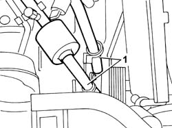
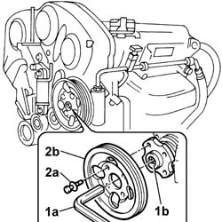

1092C14 POWER STEERING PUMP/SELF LEVELLING SUSPENSION PUMP PULLEY - R + R WITH BELT REMOVED
- Path
- Procedures > 10 ENGINE > 1092 ENGINE COMPONENT MISCELLANEOUS DRIVES > 1092C POWER STEERING/SELF-LEVELLING SUSPENSION PUMP DRIVE > 1092C14 POWER STEERING PUMP/SELF LEVELLING SUSPENSION PUMP PULLEY - R + R WITH BELT REMOVED
- Kind
- repair procedure (removal / refitting; the operation number is the code)
- Applies to
- engines: 3.0 24V V6; all production periods
- Interactive page
- https://sloeber94.github.io/elrnDB-fUlss/en/#/179007205
Applies to: engines: 3.0 24V V6; all production periods
 Removing
Removing
 Refitting
Refitting1. Release the coolant and air conditioning system pipes from their anchorages and move.

Applies to: engines: 3.0 24V V6; all production periods
1. Keep the pulley in place by inserting a socket wrench (1a) of appropriate size in the seat (1b) in the pump shaft.
2. Undo the fixing bolts (2a) and remove the power steering pulley (2b).

Applies to: engines: 3.0 24V V6; all production periods
Refitting
Removing- Position the power steering pump pulley in its seat.
- Tighten the bolts, keep the pulley in position using the socket wrench and tighten to the specified torque.
 | Value - daNm | Fastening | Component | Ø |
|---|---|---|---|---|
. | 2.5 | Bolts | POWER ASSISTED STEERING PUMP PULLEY - R.R. | - |
Topics that link to this page (11)
- 1008C14 ENGINE LINK BRACKET - R R
- 1020D14 FRONT CRANKSHAFT OIL SEAL COVER - R.R AND REPLACE SEALS FOR VERSIONS WITH OIL PUMP ON CRANKSHAFT, TIMING SIDE
- 1020D18 FRONT CRANK SHAFT COVER OIL SEAL - REPLACE
- 1032B46 TOOTHED DRIVE PULLEY - R + R
- 1032C18 MOBILE TIMING SYSTEM TENSIONER - R + R FOR 24 VALVE ENGINES
- 1032C31 FIXED TIMING TENSIONER - R R
- 1036C39 TIMING VARIATOR ON CYLINDER HEAD INTAKE CAMSHAFT - R R
- 1084A16 OIL DIP STICK PIPE - R R
- 1088C10 WATER PUMP - R + R
- 5530A10 ALTERNATOR - R+R
- 5530A40 ALTERNATOR BRACKETS/MOUNT/SPACER - R R